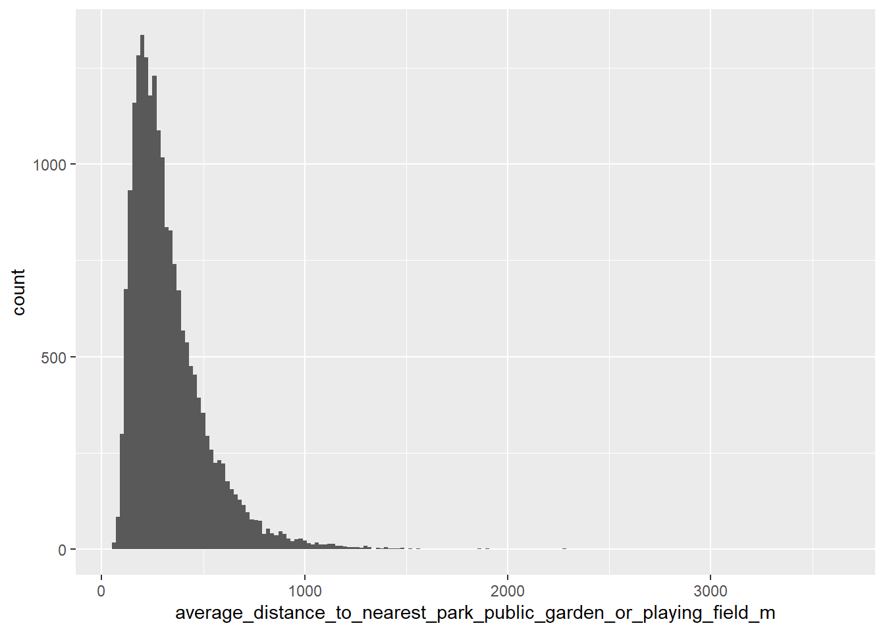
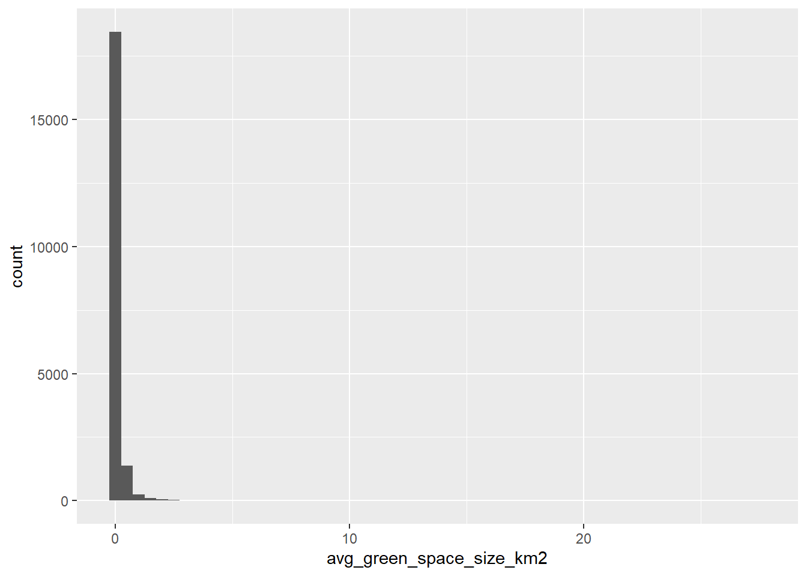
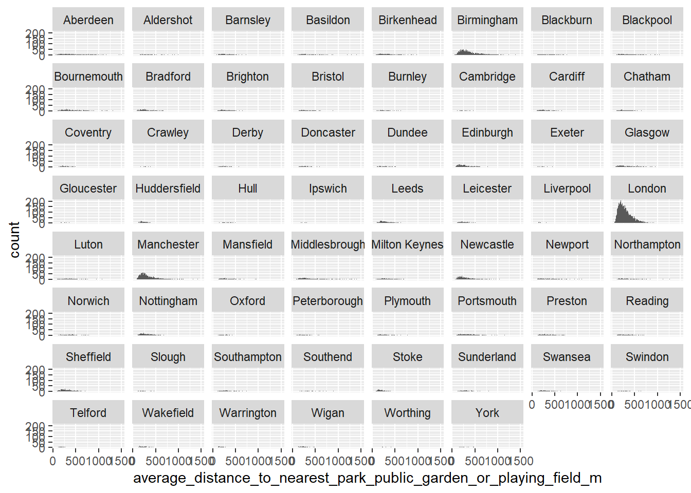

library(here)
library(readxl)
library(dplyr)
library(janitor)
library(tidyr)
library(ggplot2)PGP - Candidate locations selection
The brief
Identification of 5-10 cities of interest across at least 2 countries in the UK.
What is a city?
A practical answer to this complicated question comes from the Centre for Cities: they have selected the UK’s 63 largest cities and towns, which they have defined as Primary Urban Areas (PUAs). As explained on their website:
This is a measure of the “built-up” area of a large city or town, rather than individual local authority districts. We use PUAs in our analysis because they provide a consistent measure to compare concentrations of economic activity across the UK. This makes them distinct from city region or combined authority geographies.
Following this methodology, the process presented here limits itself to these 63 PUAs. This excludes more rural areas, which could be problematic. On the one hand, these places are likely to have better access to green spaces. On the other hand, these green spaces may not be suitable for children to play in. Additionally, rural places can suffer from high levels of deprivation.
Place selection
Index of Multiple Deprivation & Access to Nature
The data presented below comes from the ONS and relates to Access to gardens and public green space in Great Britain.
This file contains the following sheets:
excel_sheets(here("data-raw", "ospublicgreenspacereferencetables.xlsx")) [1] "Readme" "Country Parks only"
[3] "Country Parks and Playing Field" "Region Parks only"
[5] "Region Parks and Playing Fields" "LAD Parks only"
[7] "LAD Parks and Playing Fields" "LSOA Parks only"
[9] "LSOA Parks and Playing Fields" "GB Access by Ethnicity" Index of Multiple Deprivation
To answer the question we’re interested in (“Which are the most deprived cities in the UK?”) we need to:
- combine Local Authority Districts (LADs) into Primary Urban Areas (PUAs)
- calculate the level of deprivation in each PUA, taking into account that deprivation is measured on the level of LSOA
- order PUAs in order of deprivation
Let’s start by looking at the data in sheet number nine, LSOA Parks and Playing Fields. This is a sensible starting point because it is where the data that contains information on how deprived each LSOA is.
lsoa_parks_play <- read_excel(here("data-raw", "ospublicgreenspacereferencetables.xlsx"),
sheet = 9) %>%
clean_names() %>%
drop_na(country_code)
dim(lsoa_parks_play)[1] 41396 19names(lsoa_parks_play) [1] "country_code"
[2] "country_name"
[3] "region_code"
[4] "region_name"
[5] "lad_code"
[6] "lad_name"
[7] "msoa_code"
[8] "msoa_name"
[9] "lsoa_code"
[10] "lsoa_name"
[11] "index_of_multiple_deprivation_rank_country_specific"
[12] "index_of_multiple_deprivation_decile_country_specific"
[13] "average_distance_to_nearest_park_public_garden_or_playing_field_m"
[14] "average_size_of_nearest_park_public_garden_or_playing_field_m2"
[15] "average_number_of_parks_public_gardens_or_playing_fields_within_1_000_m_radius"
[16] "average_combined_size_of_parks_public_gardens_or_playing_fields_within_1_000_m_radius_m2"
[17] "number_of_postcodes_within_built_up_area"
[18] "number_of_built_up_area_postcodes_within_300m_of_a_park_public_garden_or_playing_field"
[19] "number_of_built_up_area_postcodes_within_900m_of_a_park_public_garden_or_playing_field" The next step is to combine LADs (and their component LSOAs) into PUAs. This is done using the Centre for Cities 2022 Table. The code doing this is very long, but essentially what it does is create a new variable called PUA and assigns a value to it depending on the LAD name associated with each obswervation.
Code
puas <- lsoa_parks_play %>%
mutate(PUA = case_when(
# the CfC table had this LAD down as Aberdeen. ideally check if Aberdeen City is what is meant, as there is also Aberdeenshire
lad_name == "Aberdeen City" ~ "Aberdeen",
lad_name == "Rusmoor" ~ "Aldershot",
lad_name == "Surrey Heath" ~ "Aldershot",
lad_name == "Barnsley" ~ "Barnsley",
lad_name == "Basildon" ~ "Basildon",
lad_name == "Wirral" ~ "Birkenhead",
lad_name == "Birmingham" ~ "Birmingham",
lad_name == "Dudley" ~ "Birmingham",
lad_name == "Sandwell" ~ "Birmingham",
lad_name == "Solihull" ~ "Birmingham",
lad_name == "Walsall" ~ "Birmingham",
lad_name == "Wolverhampton" ~ "Birmingham",
lad_name == "Blackburn with Darwen" ~ "Blackburn",
lad_name == "Blackpool" ~ "Blackpool",
lad_name == "Fylde" ~ "Blackpool",
lad_name == "Dorset" ~ "Bournemouth",
lad_name == "Bournemouth, Christchurch and Poole" ~ "Bournemouth",
lad_name == "Bradford" ~ "Bradford",
lad_name == "Adur" ~ "Brighton",
lad_name == "Brighton and Hove" ~ "Brighton",
lad_name == "City of Bristol" ~ "Bristol",
lad_name == "South Gloucestershire" ~ "Bristol",
lad_name == "Burnley" ~ "Burnley",
lad_name == "Pendle" ~ "Burnley",
lad_name == "Cambridge" ~ "Cambridge",
lad_name == "Cardiff" ~ "Cardiff",
lad_name == "Medway" ~ "Chatham",
lad_name == "Coventry" ~ "Coventry",
lad_name == "Crawley" ~ "Crawley",
lad_name == "Derby" ~ "Derby",
lad_name == "Doncaster" ~ "Doncaster",
# the CfC table had this LAD down as Dundee
lad_name == "Dundee City" ~ "Dundee",
# the CfC table had this LAD down as Edinburgh
lad_name == "City of Edinburgh" ~ "Edinburgh",
lad_name == "Exeter" ~ "Exeter",
lad_name == "East Dunbartonshire" ~ "Glasgow",
lad_name == "East Renfrewshire" ~ "Glasgow",
lad_name == "Glasgow" ~ "Glasgow",
lad_name == "Renfrewshire" ~ "Glasgow",
lad_name == "Gloucester" ~ "Gloucester",
lad_name == "Kirklees" ~ "Huddersfield",
# the CfC table had this LAD down as Kingston upon Hull
lad_name == "Kingston upon Hull, City of" ~ "Hull",
lad_name == "Ipswich" ~ "Ipswich",
lad_name == "Leeds" ~ "Leeds",
lad_name == "Blaby" ~ "Leicester",
lad_name == "Leicester" ~ "Leicester",
lad_name == "Oadby and Wigston" ~ "Leicester",
lad_name == "Knowsley" ~ "Liverpool",
lad_name == "Barking and Dagenham" ~ "London",
lad_name == "Barnet" ~ "London",
lad_name == "Bexley" ~ "London",
lad_name == "Brent" ~ "London",
lad_name == "Bromley" ~ "London",
lad_name == "Broxbourne" ~ "London",
lad_name == "Camden" ~ "London",
lad_name == "City of London" ~ "London",
lad_name == "Croydon" ~ "London",
lad_name == "Dartford" ~ "London",
lad_name == "Ealing" ~ "London",
lad_name == "Elmbridge" ~ "London",
lad_name == "Enfield" ~ "London",
lad_name == "Epping Forest" ~ "London",
lad_name == "Epsom and Ewell" ~ "London",
lad_name == "Gravesham" ~ "London",
lad_name == "Greenwich" ~ "London",
lad_name == "Hackney" ~ "London",
lad_name == "Hammersmith and Fulham" ~ "London",
lad_name == "Haringey" ~ "London",
lad_name == "Harrow" ~ "London",
lad_name == "Havering" ~ "London",
lad_name == "Hertsmere" ~ "London",
lad_name == "Hillingdon" ~ "London",
lad_name == "Hounslow" ~ "London",
lad_name == "Islington" ~ "London",
lad_name == "Kensington and Chelsea" ~ "London",
lad_name == "Kingston upon Thames" ~ "London",
lad_name == "Lambeth" ~ "London",
lad_name == "Lewisham" ~ "London",
lad_name == "Merton" ~ "London",
lad_name == "Newham" ~ "London",
lad_name == "Redbridge" ~ "London",
lad_name == "Richard upon Thames" ~ "London",
lad_name == "Runnymede" ~ "London",
lad_name == "Southwark" ~ "London",
lad_name == "Spelthorne" ~ "London",
lad_name == "Sutton" ~ "London",
lad_name == "Three Rivers" ~ "London",
lad_name == "Tower Hamlets" ~ "London",
lad_name == "Waltham Forest" ~ "London",
lad_name == "Wandsworth" ~ "London",
lad_name == "Watford" ~ "London",
lad_name == "Westminster" ~ "London",
lad_name == "Woking" ~ "London",
lad_name == "Luton" ~ "Luton",
lad_name == "Bolton" ~ "Manchester",
lad_name == "Bury" ~ "Manchester",
lad_name == "Manchester" ~ "Manchester",
lad_name == "Oldham" ~ "Manchester",
lad_name == "Rochdale" ~ "Manchester",
lad_name == "Salford" ~ "Manchester",
lad_name == "Stockport" ~ "Manchester",
lad_name == "Tameside" ~ "Manchester",
lad_name == "Trafford" ~ "Manchester",
lad_name == "Ashfield" ~ "Mansfield",
lad_name == "Mansfield" ~ "Mansfield",
lad_name == "Middlesbrough" ~ "Middlesbrough",
lad_name == "Redcar and Cleveland" ~ "Middlesbrough",
lad_name == "Stockton-on-Tees" ~ "Middlesbrough",
lad_name == "Milton Keynes" ~ "Milton Keynes",
lad_name == "Gateshead" ~ "Newcastle",
lad_name == "Newcastle upon Tyne" ~ "Newcastle",
lad_name == "North Tyneside" ~ "Newcastle",
lad_name == "South Tyneside" ~ "Newcastle",
lad_name == "Newport" ~ "Newport",
lad_name == "Torfaen" ~ "Newport",
# the CfC table only lists the LAD of West Northamptonshire
# this does not exist in the data
# only East Northamptonshire and Northampton exist
# this warrants further investigation
lad_name == "Northampton" ~ "Northampton",
lad_name == "Broadland" ~ "Norwich",
lad_name == "Norwich" ~ "Norwich",
lad_name == "Broxtowe" ~ "Nottingham",
lad_name == "Erewash" ~ "Nottingham",
lad_name == "Gedling" ~ "Nottingham",
lad_name == "Nottingham" ~ "Nottingham",
lad_name == "Oxford" ~ "Oxford",
lad_name == "Peterborough" ~ "Peterborough",
lad_name == "Plymouth" ~ "Plymouth",
lad_name == "Portsmouth" ~ "Portsmouth",
lad_name == "Fareham" ~ "Portsmouth",
lad_name == "Gosport" ~ "Portsmouth",
lad_name == "Havant" ~ "Portsmouth",
lad_name == "Chorley" ~ "Preston",
lad_name == "Preston" ~ "Preston",
lad_name == "South Ribble" ~ "Preston",
lad_name == "Reading" ~ "Reading",
lad_name == "Wokingham" ~ "Reading",
lad_name == "Rotherham" ~ "Sheffield",
lad_name == "Sheffield" ~ "Sheffield",
lad_name == "Slough" ~ "Slough",
lad_name == "Eastleigh" ~ "Southampton",
lad_name == "Southampton" ~ "Southampton",
lad_name == "Castlepoint" ~ "Southend",
lad_name == "Southend-on-Sea" ~ "Southend",
lad_name == "Rochford" ~ "Southend",
lad_name == "Newcastle-under-Lyme" ~ "Stoke",
lad_name == "Stoke-on-Trent" ~ "Stoke",
lad_name == "Sunderland" ~ "Sunderland",
lad_name == "Neath Port Talbot" ~ "Swansea",
lad_name == "Swansea" ~ "Swansea",
lad_name == "Swindon" ~ "Swindon",
lad_name == "Telford and Wrekin" ~ "Telford",
lad_name == "Wakefield" ~ "Wakefield",
lad_name == "Warrington" ~ "Warrington",
lad_name == "Wigan" ~ "Wigan",
lad_name == "Worthing" ~ "Worthing",
lad_name == "York" ~ "York"
))Note that there are LSOAs that don’t belong to a PUA. These are dropped here.
puas <- puas %>%
drop_na(PUA)Following procedure used in the RSA’s UK Urban Futures Commission report, relative deprivation for each PUA is determined by the percentage of LSOAs that are in the most deprived deciles.
Code
pua_imd <- puas %>%
count(country_name, PUA, index_of_multiple_deprivation_decile_country_specific) %>%
group_by(country_name, PUA) %>%
mutate(percentage = (n/sum(n)) * 100) %>%
ungroup() %>%
filter(index_of_multiple_deprivation_decile_country_specific %in% 1:2) %>%
drop_na(PUA)These PUAs are then displayed for each country in Great Britain.
England:
pua_imd %>%
filter(country_name == "England") %>%
arrange(index_of_multiple_deprivation_decile_country_specific, desc(percentage)) %>%
select(-n)# A tibble: 103 × 4
country_name PUA index_of_multiple_deprivation_decile_…¹ percentage
<chr> <chr> <dbl> <dbl>
1 England Liverpool 1 46.9
2 England Hull 1 45.2
3 England Blackburn 1 36.7
4 England Burnley 1 35.0
5 England Bradford 1 33.5
6 England Middlesbrough 1 30.3
7 England Blackpool 1 28.3
8 England Birmingham 1 28.0
9 England Birkenhead 1 25.2
10 England Manchester 1 24.2
# ℹ 93 more rows
# ℹ abbreviated name: ¹index_of_multiple_deprivation_decile_country_specificScotland:
pua_imd %>%
filter(country_name == "Scotland") %>%
arrange(index_of_multiple_deprivation_decile_country_specific, desc(percentage)) %>%
select(-n)# A tibble: 8 × 4
country_name PUA index_of_multiple_deprivation_decile_count…¹ percentage
<chr> <chr> <dbl> <dbl>
1 Scotland Dundee 1 21.8
2 Scotland Glasgow 1 8.15
3 Scotland Edinburgh 1 6.20
4 Scotland Aberdeen 1 1.06
5 Scotland Dundee 2 14.9
6 Scotland Edinburgh 2 7.54
7 Scotland Glasgow 2 7.30
8 Scotland Aberdeen 2 6.74
# ℹ abbreviated name: ¹index_of_multiple_deprivation_decile_country_specificWales:
pua_imd %>%
filter(country_name == "Wales") %>%
arrange(index_of_multiple_deprivation_decile_country_specific, desc(percentage)) %>%
select(-n)# A tibble: 6 × 4
country_name PUA index_of_multiple_deprivation_decile_country…¹ percentage
<chr> <chr> <dbl> <dbl>
1 Wales Cardiff 1 18.2
2 Wales Newport 1 16.8
3 Wales Swansea 1 13.0
4 Wales Newport 2 16.8
5 Wales Swansea 2 14.2
6 Wales Cardiff 2 9.35
# ℹ abbreviated name: ¹index_of_multiple_deprivation_decile_country_specificThe first thing to note is that Scotland and Wales have a much smaller number of PUAs. There are four in Scotland (Aberdeen, Dundee, Edinburgh and Glasgow) and three in Wales (Cardiff, Newport and Swansea).
Summary
In Scotland, Dundee faces by far the highest levels of deprivation, compared to Glasgow, Edinburgh and Aberdeen, and would be the best target in Scotland, if we were to pick only one.
In Wales, the three PUAs are not as dissimilar in terms of deprivation as they were in Scotland. That being said, Newport is experiencing the highest levels of deprivation, with Cardiff and Swansea following.
The vast majority of PUAs is located in England. In order of deprivation, again looking at the top two deciles,:
- Liverpool
- Blackburn
- Hull
- Birmingham
- Bradford
- Burnley
- Peterborough
Access to Nature
Let’s now focus on what access people have to green spaces. It should be noted that parks and public gardens will be public, but playing fields may be private.
names(puas) [1] "country_code"
[2] "country_name"
[3] "region_code"
[4] "region_name"
[5] "lad_code"
[6] "lad_name"
[7] "msoa_code"
[8] "msoa_name"
[9] "lsoa_code"
[10] "lsoa_name"
[11] "index_of_multiple_deprivation_rank_country_specific"
[12] "index_of_multiple_deprivation_decile_country_specific"
[13] "average_distance_to_nearest_park_public_garden_or_playing_field_m"
[14] "average_size_of_nearest_park_public_garden_or_playing_field_m2"
[15] "average_number_of_parks_public_gardens_or_playing_fields_within_1_000_m_radius"
[16] "average_combined_size_of_parks_public_gardens_or_playing_fields_within_1_000_m_radius_m2"
[17] "number_of_postcodes_within_built_up_area"
[18] "number_of_built_up_area_postcodes_within_300m_of_a_park_public_garden_or_playing_field"
[19] "number_of_built_up_area_postcodes_within_900m_of_a_park_public_garden_or_playing_field"
[20] "PUA" Looking at the variables included in this dataset again, the variables average_distance_to_nearest_park_public_garden_or_playing_field_m and average_size_of_nearest_park_public_garden_or_playing_field_m2 seem like the most promising for our purposes.
puas %>%
ggplot(aes(x = average_distance_to_nearest_park_public_garden_or_playing_field_m)) +
geom_histogram(binwidth = 20)
puas %>%
# converting to km2 to avoid the plot having scientific notation
mutate(avg_green_space_size_km2 = average_size_of_nearest_park_public_garden_or_playing_field_m2/(1000^2)) %>%
ggplot(aes(x = avg_green_space_size_km2)) +
geom_histogram(binwidth = .5)
It looks like the vast majority of green spaces are at a distance of no more than 1400m. The following plot shows the distribution of distances to nearest green spaces for each PUA. To make it easier to parse the plot, distances over 1500m have been excluded.
puas %>%
filter(average_distance_to_nearest_park_public_garden_or_playing_field_m < 1500) %>%
ggplot(aes(x = average_distance_to_nearest_park_public_garden_or_playing_field_m)) +
geom_histogram(binwidth = 10) +
facet_wrap(~PUA)
puas %>%
group_by(PUA) %>%
summarise(median_distance_to_gs = median(average_distance_to_nearest_park_public_garden_or_playing_field_m),
median_size_gs = median(average_size_of_nearest_park_public_garden_or_playing_field_m2),
mean_distance_to_gs = mean(average_distance_to_nearest_park_public_garden_or_playing_field_m),
mean_size_gs = mean(average_size_of_nearest_park_public_garden_or_playing_field_m2)) %>%
arrange(desc(median_distance_to_gs))# A tibble: 62 × 5
PUA median_distance_to_gs median_size_gs mean_distance_to_gs mean_size_gs
<chr> <dbl> <dbl> <dbl> <dbl>
1 Southe… 436. 44180. 481. 98015.
2 Norwich 381. 33956. 427. 54825.
3 Bourne… 377. 29026. 493. 94829.
4 Hull 369. 54561. 397. 100273.
5 Aberde… 356. 45446. 437. 115833.
6 Portsm… 351. 31624. 411. 95449.
7 Glasgow 350. 35246. 431. 194404.
8 Preston 343. 46569. 390. 187820.
9 Swindon 327. 43757. 409. 117255.
10 Blackp… 324. 25994. 370. 67705.
# ℹ 52 more rowsSummary
Of the candidate places from the deprivation data, Hull is the only one that scores pretty high in distance to green spaces. Birmingham and Blackburn are in second and third place, though quite far behind Hull. The rest of the places in England are actually pretty close to green spaces. All in all, however, even in the places with the largest distances from green space, the median distances are pretty small and less than 500m in all cases.
Regarding the other GB countries, Newport is the Welsh PUA with the largest distances from green spaces and Aberdeen the Scottish one. Note, however, that Aberdeen had the lowest levels of deprivation in the Scottish PUAs.
There is a longer discussion to be had here about which the most appropriate metric is when thinking about access to nature, especially in the context of PGP. Critically, because PGP will not create new green spaces, we perhaps should be looking at the places with the best access to green spaces. This could be beneficial for the success of the project, as PGPs will have to be created in existing areas; the easier to access these are the better.
Additionally, this dataset has many limitations, one of which being that the play areas included in the dataset could be private.
Cross-checking with Income Deprivation Affecting Children Index (IDACI; England)
This data relates to the English indices of deprivation 2019.
The data was downloaded from the GOV.UK website and was made available by the Ministry of Housing, Communities & Local Government.
excel_sheets(here("data-raw", "File_3_-_IoD2019_Supplementary_Indices_-_IDACI_and_IDAOPI.xlsx"))[1] "Notes" "IoD2019 IDACI & IDAOPI"idaci_idaopi <- read_excel(here("data-raw", "File_3_-_IoD2019_Supplementary_Indices_-_IDACI_and_IDAOPI.xlsx"),
sheet = 2) %>%
clean_names()
names(idaci_idaopi) [1] "lsoa_code_2011"
[2] "lsoa_name_2011"
[3] "local_authority_district_code_2019"
[4] "local_authority_district_name_2019"
[5] "index_of_multiple_deprivation_imd_rank_where_1_is_most_deprived"
[6] "index_of_multiple_deprivation_imd_decile_where_1_is_most_deprived_10_percent_of_lso_as"
[7] "income_deprivation_affecting_children_index_idaci_rank_where_1_is_most_deprived"
[8] "income_deprivation_affecting_children_index_idaci_decile_where_1_is_most_deprived_10_percent_of_lso_as"
[9] "income_deprivation_affecting_older_people_idaopi_rank_where_1_is_most_deprived"
[10] "income_deprivation_affecting_older_people_idaopi_decile_where_1_is_most_deprived_10_percent_of_lso_as" Code
idaci <- idaci_idaopi %>%
select(lsoa_code = lsoa_code_2011,
lsoa_name = lsoa_name_2011,
lad_name = local_authority_district_name_2019,
lad_code = local_authority_district_code_2019,
imd_rank = index_of_multiple_deprivation_imd_rank_where_1_is_most_deprived,
imd_decile = index_of_multiple_deprivation_imd_decile_where_1_is_most_deprived_10_percent_of_lso_as,
idaci_rank = income_deprivation_affecting_children_index_idaci_rank_where_1_is_most_deprived,
idaci_decile = income_deprivation_affecting_children_index_idaci_decile_where_1_is_most_deprived_10_percent_of_lso_as) %>%
mutate(pua = case_when(
# the CfC table had this LAD down as Aberdeen. ideally check if Aberdeen City is what is meant, as there is also Aberdeenshire
lad_name == "Aberdeen City" ~ "Aberdeen",
lad_name == "Rusmoor" ~ "Aldershot",
lad_name == "Surrey Heath" ~ "Aldershot",
lad_name == "Barnsley" ~ "Barnsley",
lad_name == "Basildon" ~ "Basildon",
lad_name == "Wirral" ~ "Birkenhead",
lad_name == "Birmingham" ~ "Birmingham",
lad_name == "Dudley" ~ "Birmingham",
lad_name == "Sandwell" ~ "Birmingham",
lad_name == "Solihull" ~ "Birmingham",
lad_name == "Walsall" ~ "Birmingham",
lad_name == "Wolverhampton" ~ "Birmingham",
lad_name == "Blackburn with Darwen" ~ "Blackburn",
lad_name == "Blackpool" ~ "Blackpool",
lad_name == "Fylde" ~ "Blackpool",
lad_name == "Dorset" ~ "Bournemouth",
lad_name == "Bournemouth, Christchurch and Poole" ~ "Bournemouth",
lad_name == "Bradford" ~ "Bradford",
lad_name == "Adur" ~ "Brighton",
lad_name == "Brighton and Hove" ~ "Brighton",
lad_name == "City of Bristol" ~ "Bristol",
lad_name == "South Gloucestershire" ~ "Bristol",
lad_name == "Burnley" ~ "Burnley",
lad_name == "Pendle" ~ "Burnley",
lad_name == "Cambridge" ~ "Cambridge",
lad_name == "Cardiff" ~ "Cardiff",
lad_name == "Medway" ~ "Chatham",
lad_name == "Coventry" ~ "Coventry",
lad_name == "Crawley" ~ "Crawley",
lad_name == "Derby" ~ "Derby",
lad_name == "Doncaster" ~ "Doncaster",
# the CfC table had this LAD down as Dundee
lad_name == "Dundee City" ~ "Dundee",
# the CfC table had this LAD down as Edinburgh
lad_name == "City of Edinburgh" ~ "Edinburgh",
lad_name == "Exeter" ~ "Exeter",
lad_name == "East Dunbartonshire" ~ "Glasgow",
lad_name == "East Renfrewshire" ~ "Glasgow",
lad_name == "Glasgow" ~ "Glasgow",
lad_name == "Renfrewshire" ~ "Glasgow",
lad_name == "Gloucester" ~ "Gloucester",
lad_name == "Kirklees" ~ "Huddersfield",
# the CfC table had this LAD down as Kingston upon Hull
lad_name == "Kingston upon Hull, City of" ~ "Hull",
lad_name == "Ipswich" ~ "Ipswich",
lad_name == "Leeds" ~ "Leeds",
lad_name == "Blaby" ~ "Leicester",
lad_name == "Leicester" ~ "Leicester",
lad_name == "Oadby and Wigston" ~ "Leicester",
lad_name == "Knowsley" ~ "Liverpool",
lad_name == "Barking and Dagenham" ~ "London",
lad_name == "Barnet" ~ "London",
lad_name == "Bexley" ~ "London",
lad_name == "Brent" ~ "London",
lad_name == "Bromley" ~ "London",
lad_name == "Broxbourne" ~ "London",
lad_name == "Camden" ~ "London",
lad_name == "City of London" ~ "London",
lad_name == "Croydon" ~ "London",
lad_name == "Dartford" ~ "London",
lad_name == "Ealing" ~ "London",
lad_name == "Elmbridge" ~ "London",
lad_name == "Enfield" ~ "London",
lad_name == "Epping Forest" ~ "London",
lad_name == "Epsom and Ewell" ~ "London",
lad_name == "Gravesham" ~ "London",
lad_name == "Greenwich" ~ "London",
lad_name == "Hackney" ~ "London",
lad_name == "Hammersmith and Fulham" ~ "London",
lad_name == "Haringey" ~ "London",
lad_name == "Harrow" ~ "London",
lad_name == "Havering" ~ "London",
lad_name == "Hertsmere" ~ "London",
lad_name == "Hillingdon" ~ "London",
lad_name == "Hounslow" ~ "London",
lad_name == "Islington" ~ "London",
lad_name == "Kensington and Chelsea" ~ "London",
lad_name == "Kingston upon Thames" ~ "London",
lad_name == "Lambeth" ~ "London",
lad_name == "Lewisham" ~ "London",
lad_name == "Merton" ~ "London",
lad_name == "Newham" ~ "London",
lad_name == "Redbridge" ~ "London",
lad_name == "Richard upon Thames" ~ "London",
lad_name == "Runnymede" ~ "London",
lad_name == "Southwark" ~ "London",
lad_name == "Spelthorne" ~ "London",
lad_name == "Sutton" ~ "London",
lad_name == "Three Rivers" ~ "London",
lad_name == "Tower Hamlets" ~ "London",
lad_name == "Waltham Forest" ~ "London",
lad_name == "Wandsworth" ~ "London",
lad_name == "Watford" ~ "London",
lad_name == "Westminster" ~ "London",
lad_name == "Woking" ~ "London",
lad_name == "Luton" ~ "Luton",
lad_name == "Bolton" ~ "Manchester",
lad_name == "Bury" ~ "Manchester",
lad_name == "Manchester" ~ "Manchester",
lad_name == "Oldham" ~ "Manchester",
lad_name == "Rochdale" ~ "Manchester",
lad_name == "Salford" ~ "Manchester",
lad_name == "Stockport" ~ "Manchester",
lad_name == "Tameside" ~ "Manchester",
lad_name == "Trafford" ~ "Manchester",
lad_name == "Ashfield" ~ "Mansfield",
lad_name == "Mansfield" ~ "Mansfield",
lad_name == "Middlesbrough" ~ "Middlesbrough",
lad_name == "Redcar and Cleveland" ~ "Middlesbrough",
lad_name == "Stockton-on-Tees" ~ "Middlesbrough",
lad_name == "Milton Keynes" ~ "Milton Keynes",
lad_name == "Gateshead" ~ "Newcastle",
lad_name == "Newcastle upon Tyne" ~ "Newcastle",
lad_name == "North Tyneside" ~ "Newcastle",
lad_name == "South Tyneside" ~ "Newcastle",
lad_name == "Newport" ~ "Newport",
lad_name == "Torfaen" ~ "Newport",
# the CfC table only lists the LAD of West Northamptonshire
# this does not exist in the data
# only East Northamptonshire and Northampton exist
# this warrants further investigation
lad_name == "Northampton" ~ "Northampton",
lad_name == "Broadland" ~ "Norwich",
lad_name == "Norwich" ~ "Norwich",
lad_name == "Broxtowe" ~ "Nottingham",
lad_name == "Erewash" ~ "Nottingham",
lad_name == "Gedling" ~ "Nottingham",
lad_name == "Nottingham" ~ "Nottingham",
lad_name == "Oxford" ~ "Oxford",
lad_name == "Peterborough" ~ "Peterborough",
lad_name == "Plymouth" ~ "Plymouth",
lad_name == "Portsmouth" ~ "Portsmouth",
lad_name == "Fareham" ~ "Portsmouth",
lad_name == "Gosport" ~ "Portsmouth",
lad_name == "Havant" ~ "Portsmouth",
lad_name == "Chorley" ~ "Preston",
lad_name == "Preston" ~ "Preston",
lad_name == "South Ribble" ~ "Preston",
lad_name == "Reading" ~ "Reading",
lad_name == "Wokingham" ~ "Reading",
lad_name == "Rotherham" ~ "Sheffield",
lad_name == "Sheffield" ~ "Sheffield",
lad_name == "Slough" ~ "Slough",
lad_name == "Eastleigh" ~ "Southampton",
lad_name == "Southampton" ~ "Southampton",
lad_name == "Castlepoint" ~ "Southend",
lad_name == "Southend-on-Sea" ~ "Southend",
lad_name == "Rochford" ~ "Southend",
lad_name == "Newcastle-under-Lyme" ~ "Stoke",
lad_name == "Stoke-on-Trent" ~ "Stoke",
lad_name == "Sunderland" ~ "Sunderland",
lad_name == "Neath Port Talbot" ~ "Swansea",
lad_name == "Swansea" ~ "Swansea",
lad_name == "Swindon" ~ "Swindon",
lad_name == "Telford and Wrekin" ~ "Telford",
lad_name == "Wakefield" ~ "Wakefield",
lad_name == "Warrington" ~ "Warrington",
lad_name == "Wigan" ~ "Wigan",
lad_name == "Worthing" ~ "Worthing",
lad_name == "York" ~ "York"
))idaci %>%
count(pua, idaci_decile) %>%
group_by(pua) %>%
mutate(percentage = (n/sum(n)) * 100) %>%
ungroup() %>%
filter(idaci_decile %in% 1:2) %>%
arrange(idaci_decile, desc(percentage)) %>%
select(-n)# A tibble: 106 × 3
pua idaci_decile percentage
<chr> <dbl> <dbl>
1 Liverpool 1 44.9
2 Hull 1 38.0
3 Middlesbrough 1 30.6
4 Sunderland 1 25.9
5 Birmingham 1 25.5
6 Birkenhead 1 23.3
7 Newcastle 1 22.1
8 Blackpool 1 22.1
9 Doncaster 1 20.6
10 Sheffield 1 20.1
# ℹ 96 more rowsThe children-specific index would suggest that the most relevant cities for our purposes are: 1. Liverpool 2. Hull 3. Birmingham 4. Blackburn 5. Bradford